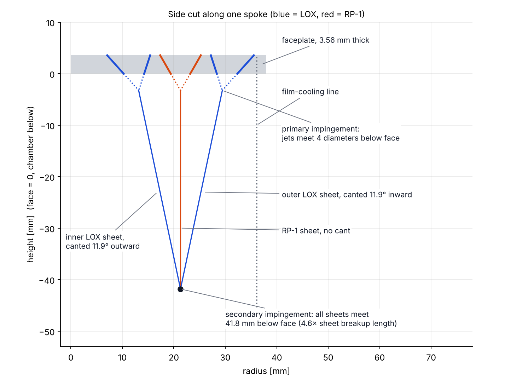
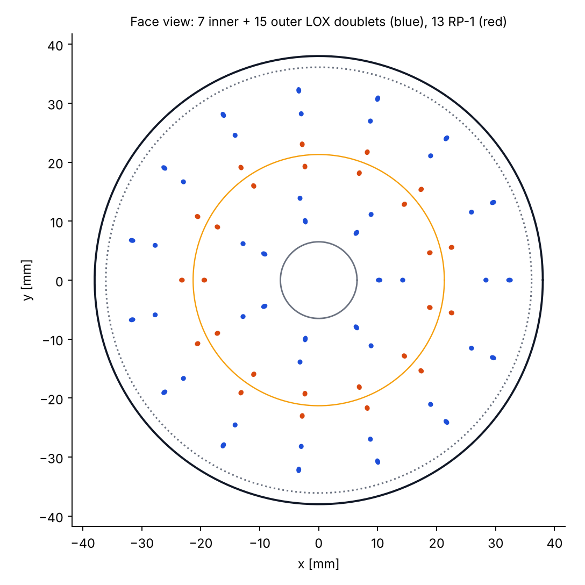
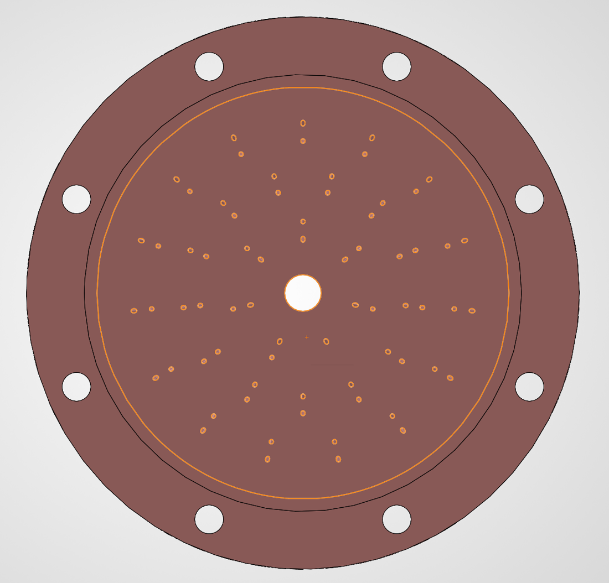
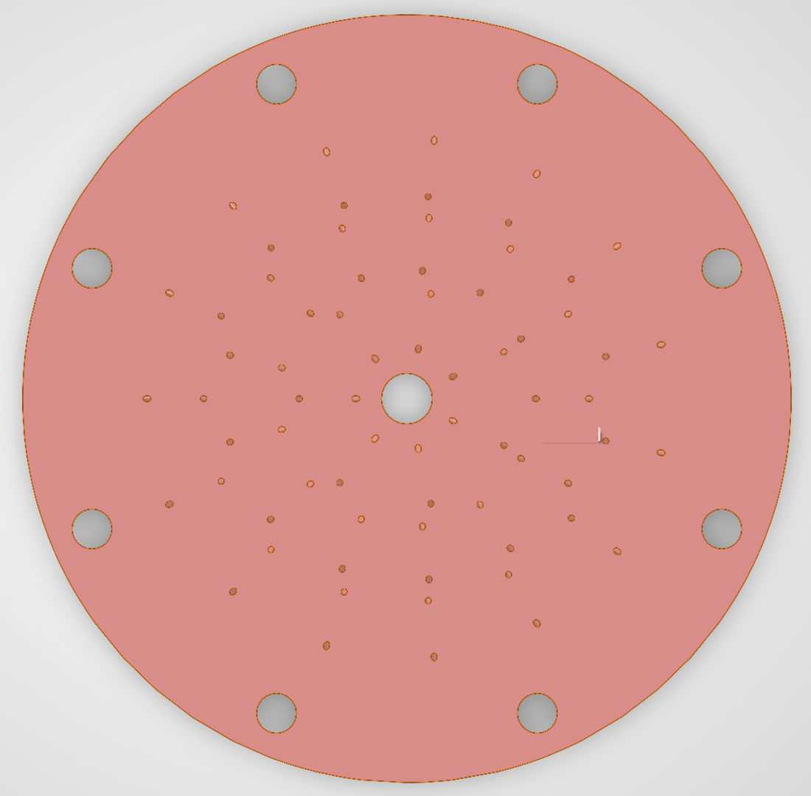
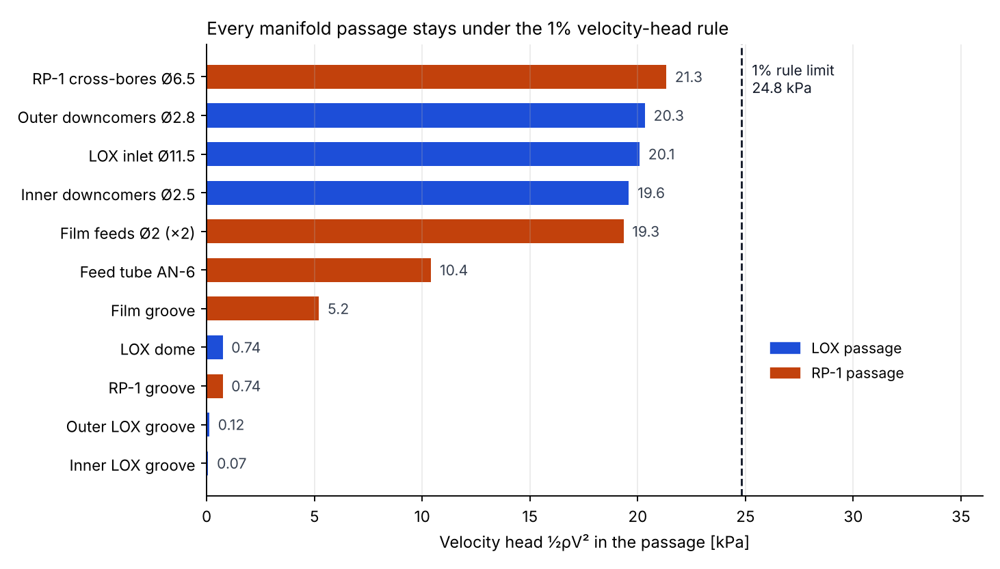
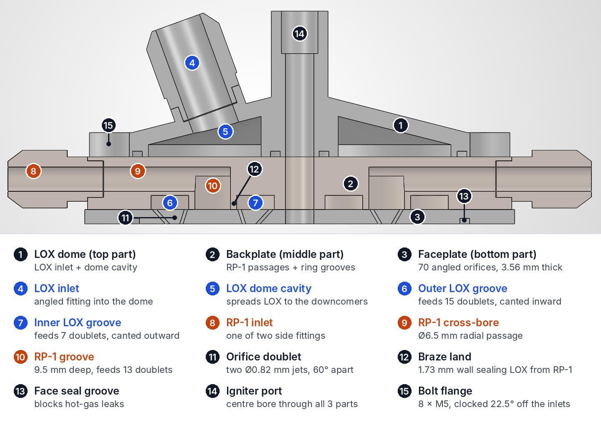
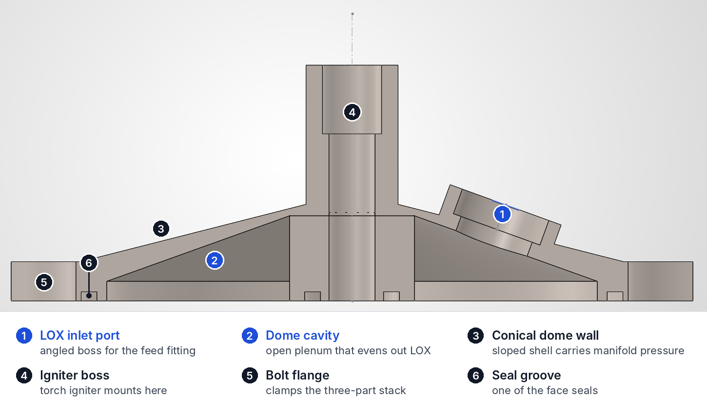
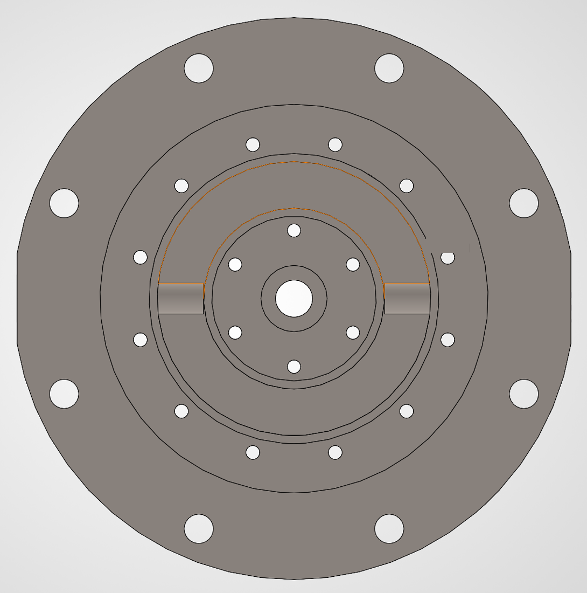
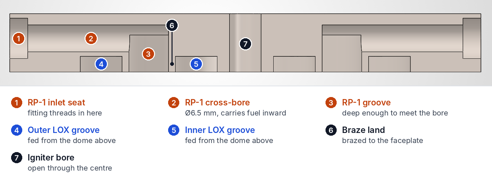

Like-on-Like Impinging Injector for the Dragonfly Lander
A 70-orifice LOX/RP-1 doublet injector, from a MATLAB sizing and layout model to manifold design and a three-part SolidWorks assembly.

Like-on-like doublets atomize a single propellant per element, so inter-element mixing must be engineered. The injector must distribute 1.06 kg/s of LOX and RP-1 uniformly across a Ø76 mm face, remain stable across a 2:1 throttle range, and be manufacturable by drilling and vacuum brazing.
- Size every orifice from mass flow and screen atomization
- Use equal momentum: one hole size for both propellants
- Lay out O-F-O rings and sweep LOX cant so the sheets meet
- Size the manifold with the 1% velocity-head rule, then build the CAD
Both LOX rings converge on the fuel ring 41.8 mm downstream, beyond sheet breakup. The layout maintains at least one hole diameter of material between flow paths, retains 20% stiffness at half throttle, and keeps every manifold passage within the 1% velocity-head criterion.
Injector Pressure Drop and Throttling
The engine runs LOX/RP-1 at O/F ≈ 2 and 20.7 bar. Injectors usually sit at 15–25% stiffness (ΔP / Pc), but injector ΔP falls with the square of flow while Pc falls linearly. A 20% design would drop to 10% at half throttle and risk feed-coupled instability.
The team's throttle study showed about 8 bar of nominal ΔP holds 20% stiffness across the range. We designed at 40% stiffness, ΔP = 8.27 bar, and the script re-checks the whole design at 50% flow.
| Throttle check | 100% | 50% flow |
|---|---|---|
| Injector ΔP | 8.27 bar | 2.07 bar |
| Stiffness ΔP / Pc | 40% | 20% |
| D32, RP-1 / LOX | 223 / 277 µm | 517 / 644 µm |
| Jet stability Lb / Li | 47 / 48 | 30 / 31 |
| Sheets meet after breakup | Yes | Yes |
Orifice Sizing
Single-phase incompressible flow, ṁ = Cd·A·√(2ρΔP), gives the total orifice area for each propellant. Then:
- Cd = 0.7. Below the textbook 0.77 for sharp-edged orifices, because drilled-hole burrs can cost up to 15% of flow. Chamfered inlets would raise Cd but add machining.
- Ø0.8 mm minimum hole. The smallest size we can reliably drill. It sets the count: 13 RP-1 and 22 LOX doublets.
- L/D = 5, Li/D = 4, 60° included angle. Standard values for a steady turbulent jet and a dense pattern.
The script screens each design with Reynolds (turbulent jets), impact Weber (strong sheet breakup) and Ohnesorge (viscosity negligible) numbers. Strakey–Talley correlations give breakup length and droplet size.
| Script output | RP-1 | LOX |
|---|---|---|
| Doublets / holes | 13 / 26 | 22 / 44 |
| Hole diameter | 0.822 mm | 0.817 mm |
| Jet velocity | 31.8 m/s | 26.6 m/s |
| Reynolds number | 12,551 | 124,321 |
| Impact Weber number | 6,412 | 12,548 |
| Sheet breakup length | 8.38 mm | 8.40 mm |
| Droplet size D32 | 223 µm | 277 µm |
| Momentum ratio | 0.986 | — |
Equal-Momentum Element Design
Our first model gave both propellants the same number of doublets. That meant unequal hole sizes and unequal jet momentum, and the mass-flux map showed separate stripes of LOX and fuel that barely mixed. Mixing is best when neither jet overpowers the other (ρ₁V₁²d₁ = ρ₂V₂²d₂). With ΔP fixing each jet's velocity, that means one hole size for both propellants and unequal counts instead. The script's momentum ratio of 0.986 confirms it.
Faceplate Layout and Cant Optimization
Room for the torch igniter at the centre and a film-cooling band at the wall left space for three rings: LOX, RP-1, LOX. Borrowing the F-1's idea of cant, we tilt each LOX doublet's pair of holes. The inner ring leans outward and the outer ring leans inward, so both LOX sprays converge on the straight fuel spray.
The script sweeps cant in 0.05° steps and rejects any layout that fails a check:
- Sprays meet after breaking into droplets (≥ 1.1× breakup length): mist on mist, not two thick sheets merging.
- Sprays meet within 15% of chamber length (42 mm), leaving 85% for combustion.
- At least one hole diameter of metal between any two paths, checked on both faces of the plate.
- Every hole is drillable.
It keeps the smallest passing cant, 11.9°, because that leaves the most metal. LOX doublets are split 7 inner / 15 outer by ring radius, and the combined spray leans 2.7° toward the centre, away from the chamber wall.




Manifold Sizing
Requirements from Martin et al. (2026): each orifice within ±5% of nominal flow, LOX and RP-1 never sharing a leak path, and buildable with CNC, EDM and vacuum brazing.
Fast-moving fluid turns static pressure into velocity head, q = ½ρV², and the holes downstream only see what's left. So every passage was sized backward from Huzel & Huang's 1% rule: q under 1% of local system pressure, giving A_min = ṁ / √(2ρ·q_max). For example, the Ø6.5 mm RP-1 cross-bore carries 0.194 kg/s at 7.3 m/s, giving q = 21.2 kPa.
Where space allowed we also met the stricter 4× area rule. The outer LOX groove only reaches 1.7×, but its velocity head is just 0.005% of manifold pressure.





Manufacturing and Sealing Decisions
Braze lands
The backplate is vacuum-brazed to the faceplate with silver braze. The 1.73 mm strips between grooves are the braze surface, and they keep LOX and RP-1 from ever sharing a leak path.
Groove width
Each groove covers both hole entries of a canted doublet plus 0.3 mm overhang, so every hole draws from its own propellant and the lands stay as wide as possible.
Manufacturability
The plate is 3.56 mm thick so fuel holes hit L/D = 5; canted LOX holes run 4.6–5.9, inside the 4–10 range. Holes are drilled and deburred before brazing, with EDM for burr control.
Material
Copper or Inconel, following the reference paper. Both are LOX-compatible and braze well. Copper pulls heat off the hot face; Inconel keeps its strength at temperature.
Sealing & bolting
Ø106 mm plates cover the Ø76 mm chamber plus a flange. A face-seal groove keeps a 1.5 mm lip from the hot gas, and eight M5 bolts are clocked 22.5° to clear the LOX inlet fittings.
Provision for Film Cooling
An outer band is kept free for small film-cooling holes with their own groove, to divert 5–15% of the fuel to the chamber wall on longer burns.